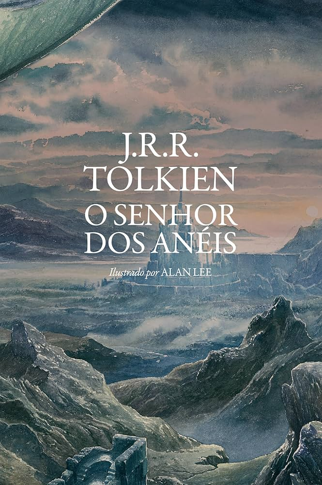
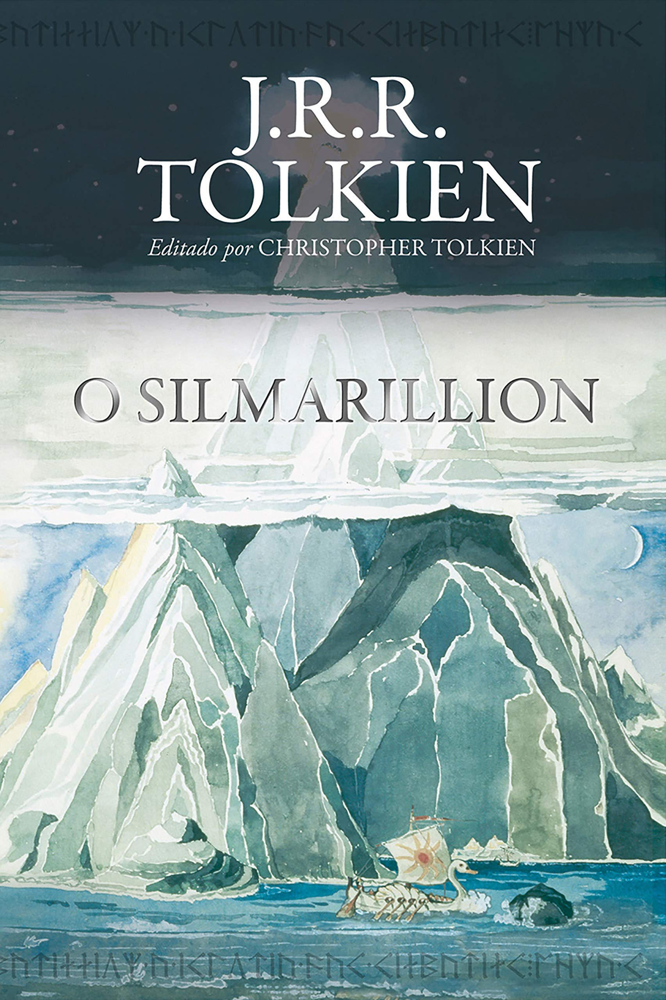

01
O Hobbit
O começo despretensioso
Uma história leve, perfeita para se familiarizar com a Terra-média, o Condado e Bilbo Bolseiro encontrando o Um Anel.
Uma rota recomendada para entrar e desbravar as histórias de Arda na ordem ideal.
Comece pela experiência clássica e fluida antes de mergulhar na mitologia densa.
O começo despretensioso
Uma história leve, perfeita para se familiarizar com a Terra-média, o Condado e Bilbo Bolseiro encontrando o Um Anel.

A grande jornada
A Sociedade do Anel, As Duas Torres e O Retorno do Rei. A obra-prima épica que eleva o tom do universo para outro patamar.
Para quem terminou O Senhor dos Anéis e quer entender como o mundo foi criado.

A "Bíblia" de Tolkien
A criação do universo por Ilúvatar, o surgimento dos Elfos, a ascensão do primeiro Senhor Sombrio (Morgoth) e as três Silmarils.
Histórias expandidas da Primeira Era que foram resumidas no Silmarillion.
A grande tragédia
A mais madura, sombria e trágica narrativa de Tolkien, focada na maldição lançada sobre Túrin Turambar.
Amor imortal
O conto fundamental da relação entre um homem mortal e uma donzela elfa, central em toda a mitologia.
A queda da cidade oculta
A narrativa militar e trágica do último refúgio dos Elfos contra o poder avassalador de Morgoth.